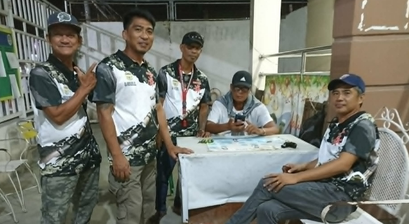

FERDINAND VALDERAMA
Ako ay mula sa Dudurot. Noong aking kabataan, napakasimple ng aming tahanan, halos maihahambing sa kulungan ng manok. Yero ang aming bubong na tinutulungan ng mga dahon ng niyog, maliit na silid, at pagluluto sa kalsada gamit ang kahoy. Mabuti na lamang at hindi na ako nakatira roon nang dumating ang tatlong malalakas na bagyo. Sa kasalukuyan, sa bago kong bahay, lagi kaming naghahanda tuwing may paparating na unos. Tulad ng karamihan, inaangat ko ang mga gamit upang hindi mabasa ng baha. Sa Barangay Colgante, halos lahat ay gumagawa ng ganitong hakbang.
Kami ay itinuturing na isang malaking pamilya. Tulad ng iba na may rehistradong bahay, nakatatanggap kami ng isang relief goods mula sa barangay. Hindi man ito kalakihan, malaking tulong pa rin. Pinaghahatian namin ito sa loob ng aming pamilya, at kung kinakailangan ng dagdag na suplay, nagsusumikap kami sa sarili naming paraan. Ang honorarium na nakukuha ko mula sa paglilingkod sa barangay ay ibinabahagi ko sa aking pamilya, lalo na sa panahon ng bagyo. Kahit hindi ako palaging nasa bahay, sinisiguro kong ligtas sila at handang tumawag sa akin kung may emergency. Kailangan kong malaman na sila’y nasa maayos na kalagayan, dahil sa bawat bagyo ay may kasamang baha, sakit, malalakas na hangin, aksidente, at pati na rin blackout.
Naalala ko noong Bagyong Crising, Dante, at Emong, dalawang araw akong nanatili sa barangay. Malaki ang banta ng mga bagyong iyon sa aming komunidad. Sa personal kong karanasan, may mga maliliit na abala tuwing bagyo, tulad ng hirap sa paglalaba, maruming tubig, at paglalakad sa baha. Ngunit, sinasanay ko ang aking sarili na huwag magpokus sa mga iyon. Itinuturing ko silang maliliit na bahagi ng kaguluhan, at inuukol ko ang aking buong atensyon sa aking tungkulin sa barangay at sa kaligtasan ng mga residente.

“ Nais kong maunawaan ng mga tao na kahit hindi ko sila mabigyan ng maraming materyal na bagay bilang responder, ginagawa ko ang lahat upang makatulong sa pagbawas ng pinsalang dulot ng baha. ”
Mahalaga para sa akin na makita nilang ang aking paglilingkod ay nakatuon sa kanilang kaligtasan. Higit sa lahat, lagi kong ipinagdarasal na matapos na ang krisis ng baha at magkaroon tayo ng mas maayos na pamumuhay kahit sa harap ng mga bagyo.